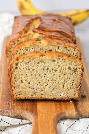

Home
Gluten Free Banana Bread Recipe

This banana bread recipe is quick and easy to make and keeps well!
Ingredients
- 3 average, very ripe bananas
- 1.5 cup 1 to 1 Gluten Free Flour mix
- 6 tablespoons melted butter
- 2 eggs, scrambled
- 3/4 cup white sugar
- 1 tsp Vanilla extract
- 1 tsp baking soda
- pinch salt
- 3/4 cup chocolate chips, walnuts, etc
Steps
- Preheat oven to 350F.
- In a medium mixing bowl, mash bananas til liquid.
- Sprinkle baking soda on mashed bananas, stir in.
- Add pinch of salt.
- Add butter, sugar, and vanilla. Mix well.
- Add eggs, stir in.
- Fold in gluten free flour, do not overstir.
- Lastly, add in desired mix-ins, chocolate, nuts, etc.
- Pour in muffin tray or bread pan, bake until folk inserted in center comes out clean.
- Enjoy!